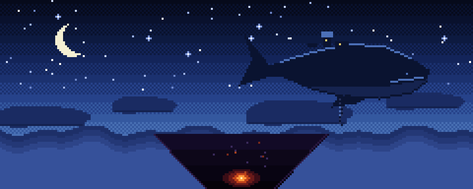
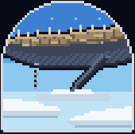
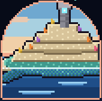
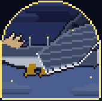
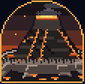

最初の 1 時間The first hour
野営地で目覚め、最初の巨神が空に現れるまで。夜の空には、影が一つ。From waking at a camp to the first titan in the sky. One shadow crosses the night.
天と淵のあいだBetween the Sky and the Abyss
BETWEEN THE SKY AND THE ABYSS
空を泳ぐ巨神の背に乗り、世界の底の謎へ。建築も採掘も、いつものままに。Climb onto titans that swim through sky, sea, storm and earth. Build and mine as you always do.
四体の巨神Four titans
一体につき一章one chapter each
一章 岩鯨初めてCh.1 Stone Whale
空を泳ぐ。空から垂れる鎖で背に乗ります。Swims the sky. Board by the chain it lowers from above.

二章 潮殻Ch.2 Tide Shell
海を歩く。前の巨神の心臓を止めた人だけが乗れます。Walks the sea. Only whoever stopped the previous heart can board.

三章 雷翼Ch.3 Thunder Wing
嵐をまとう。Wears the storm.

四章 余燼Ch.4 Ember
地を泳ぐ。四体の心臓を返したあとは、深淵へ降ります。Swims the earth. After the fourth heart, the way leads down into the abyss.
ほかと違うところWhat makes it different
巨神の背は、巨神自身と同じ形・同じ色のブロックでできた島です。順路の部屋は、背の上の離れた場所に建っています。Each back is an island of blocks shaped and colored like the titan itself. Its rooms stand apart on the back, one route after another.
心臓を止めると、巨神は眠りにつきます。次の巨神が現れ、章が進みます。倒れても持ち物は残り、墓が目印になります。Stop the heart and the titan sleeps; the next titan appears and the chapter advances. Death leaves a grave and keeps your gear.
心臓: 動いているHeart: beating
止めると眠り、次の巨神（潮殻）が現れるStop it to put it to sleep; the next titan (Tide Shell) appears
遊びのしかたHow it plays
目的の帯と知らせObjective strip
チャットは流さず、画面の決まった場所に知らせます。No chat spam. Notices appear in fixed places on screen.
転生と深淵Rebirth and the Abyss
Lv 50 で転生し、魂盤と恩恵でビルドを作り直します。Rebirth at Lv 50, rebuild with the soul board and boons.
旅嚢Travel Satchel
鍵・笛・素材は専用の袋へ。倒れても失いません。Keys, whistles and materials go in a satchel. Death does not take them.
ゆるい死Soft death
地上で倒れると墓ができます。装備と大事な品は持ったまま。Die on the ground and leave a grave. Gear and key items stay with you.